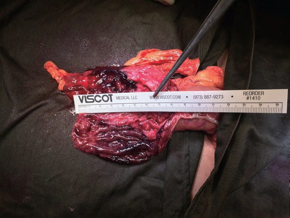
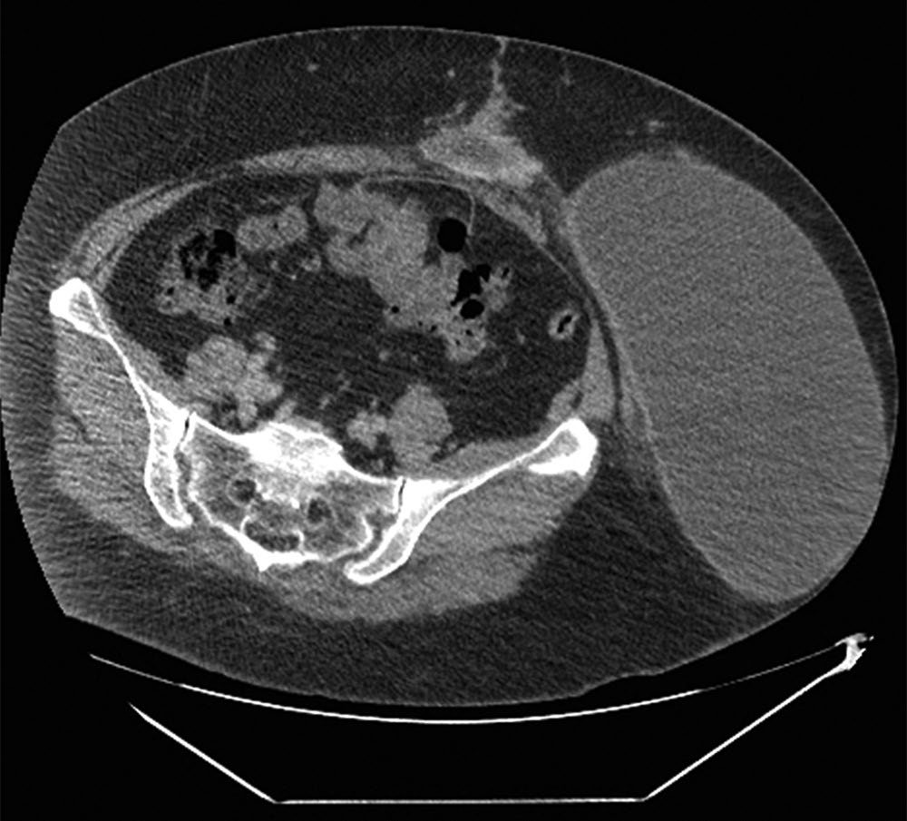

Postoperative Complications
Summary
- Postoperative complications are an important cause of morbidity, mortality, extended hospital stay and increased costs.
- Most at-risk patients can be identified preoperatively using scoring systems such as the ACS NSQIP surgical risk calculator, allowing targeted anticipatory care that reduces both incidence and severity of complications [1].
- Complications are conventionally divided into system-specific complications (respiratory, cardiac, renal, gastrointestinal, neurological, haematological) and surgery-specific complications, and different complications predominate at different points in the postoperative timeline [1][2].
- Standardised severity grading, principally the Clavien-Dindo Classification, allows objective, reproducible comparison of complications between patients, procedures and institutions [3].
Definition
- A postoperative complication is any unfavourable event following surgery other than "failure to cure" (the intended outcome not achieved) or an inherent "sequela" of the procedure (e.g. amputation causing disability).
- Clavien and colleagues first coined the standardised concept of an "adverse outcome" encompassing complications, failure to cure and sequelae in 1992 [3].
- Complications are graded according to the treatment they require, which eliminates subjective bias and prevents complications being downgraded [1].
Pathophysiology
- Different complications cluster at characteristic points in the postoperative course: atelectasis is the most common source of fever within the first 48 hours, urinary tract infection predominates from 48 hours to 5 days, and wound infection becomes the leading cause after 5 days, with the fuller sequence being atelectasis, urinary tract infection, pneumonia, DVT, wound infection, and intra-abdominal abscess [4].
- A comparable "Rule of W" timing pattern (pneumonia, urinary tract infection, superficial and deep/organ-space surgical site infection, venous thromboembolism, myocardial infarction, kidney injury/failure plotted against postoperative day) is described, with incidence and timing varying by complication type [1].
- Postoperative haemorrhage is classified pathophysiologically as primary (immediately after surgery, continuation of intraoperative bleeding from unsecured vessels), reactionary (within 24 hours, often venous, related to restored circulation/fluid volume exposing previously unsecured vessels), or secondary (up to 10 days postoperatively, usually due to wound/tissue infection causing clot disintegration) [5].
- Paralytic ileus results from prolonged surgery, bowel handling, peritonitis, electrolyte disturbance, anticholinergic/opiate drugs, prolonged hypotension/hypoxia and immobilisation, causing cessation of GI motility [5].
- Acute kidney injury after surgery is categorised as pre-renal (shock, hypovolaemia, sepsis), renal (sepsis, hypoxia, nephrotoxic drugs, rhabdomyolysis, autoimmune disease) or post-renal (obstructive uropathy, e.g. blocked catheter, prostatic hypertrophy) [5].
Clinical features
- Wound infection presents with pain and wound discharge, malaise, anorexia and fever, with a red, swollen, tender wound that may discharge pus or be fluctuant [5].
- Wound dehiscence may be superficial or full-thickness (exposing fascia or viscera, evisceration in the abdomen), is usually painless, and is most often secondary to wound infection, with contributory factors including immunosuppression, malnutrition, steroid use, poor surgical technique and previous surgery [5].
- Postoperative haemorrhage presents with soaked dressings, wound swelling, blood in drains, pallor, sweating, tachypnoea, tachycardia and hypotension (a late sign in children/young adults); confusion/agitation reflects cerebral hypoxia from hypotension; drains, even correctly placed, are an unreliable sign of bleeding [5].
- Cardiac complications: arrhythmias (commonly AF, especially with underlying ischaemic heart disease) are unstable if accompanied by chest pain, pulmonary oedema/dyspnoea, hypotension (systolic <90 mmHg) or collapse; perioperative MI often presents atypically (patients may be unable to distinguish chest from upper abdominal pain), with duration >20 minutes, haemodynamic instability, nausea, vomiting, confusion, distress, and a cold, clammy, possibly hypoxic patient [5].
- Respiratory failure is defined as type I (PaO2 <8.0 kPa on air) or type II (PaO2 <8.0 kPa with PaCO2 >6.0 kPa).
- Chest infection presents with cough and purulent sputum, pyrexia, bronchial breath sounds/reduced air entry, neutrophilia, raised CRP and consolidation on CXR [5].
- Paralytic ileus presents with nausea, vomiting, hiccoughs, abdominal distension (tympanic or dull to percussion) and air/fluid-filled bowel loops on abdominal X-ray, and usually settles with treatment.
- Mechanical small bowel obstruction (early adhesions, internal/external/parastomal/wound herniation, intra-abdominal sepsis) presents with colicky pain, tympanic distension, high-pitched "tinkling" bowel sounds and dilated small bowel loops with relative colonic gas paucity [5].
- Postoperative delirium may be hyperactive (disoriented, uncooperative, hallucinating) or hypoactive (inactive, quiet, slowed thinking, labile mood, often missed except by relatives/nursing staff) [5].
- Perioperative stroke features include failure to regain consciousness after sedation is weaned, hemiplegia, evolving areflexia to hyperreflexia/rigidity, aphasia, dysarthria, ataxia, visual deficits, unilateral neglect, confusion, seizures, persistent hypertension and hypercapnia.
- Any deficit resolving within 24 hours is a TIA [5].
- DVT presents with leg pain, erythema, swelling and increased local skin temperature and may present first with pulmonary embolism.
- PE presents with dyspnoea, pleuritic/dull chest pain, tachypnoea, tachycardia, hypotension, elevated JVP, an ECG right ventricular strain pattern (S1Q3T3, neither sensitive nor specific), low PaO2 and classically a normal CXR [5].
Anastomotic leakage
- Any intra-abdominal anastomosis may leak, with the highest risk at oesophageal and rectal anastomoses and the lowest at small bowel anastomoses [6].
- Anastomotic leaks occur in 4–8% of ileocolic or colocolic anastomoses, and the possibility should be borne in mind in any patient not progressing as expected, or with unexplained cardiac abnormalities, fever or worsening abdominal pain [7].
- A leak may declare itself as one of several clinical pictures: peritonitis with acute, severe generalised abdominal pain, guarding and rigidity accompanied by fever, tachycardia and tachypnoea; an intra-abdominal abscess with a swinging fever and tachycardia, commonly around 5 to 7 days postoperatively, and localised tenderness related to the anastomosis; or an enteric fistula, usually the result of a subclinical leak and abscess that has discharged along a path of low resistance, often presenting late as an apparent wound infection that discharges enteric content [6].
- Sepsis from an initially subclinical leak may present as an apparent cardiovascular complication (atrial fibrillation, SVT, chest pain or sinus tachycardia) and the Oxford Handbook states the precautionary rule that any acute postoperative disturbance of physiology in a patient with an intra-abdominal anastomosis is due to a leak until proven otherwise [6].

Postoperative urinary retention
- Inability to void after surgery is common, with a reported incidence ranging from 5% to 70% [1].
- Risk factors include age over 50 years, male sex, hernia, anorectal and pelvic surgery, a history of benign prostatic hypertrophy and neurological disease, and the risk is increased by neuraxial anaesthesia and by anticholinergic medications, alpha- and beta-blockers, sedatives and fluids given during anaesthesia [1].
- The diagnosis is confirmed by clinical examination and by ultrasound imaging [1].
- Retention needs treatment because it causes not only discomfort but also long-term bladder dysfunction, and catheterisation should be performed prophylactically when an operation is expected to last 3 hours or longer, or when large volumes of fluid are administered [1].
Complications of bedside procedures
- Central venous access should first be questioned (PICC or non-invasive monitoring instead), then placed by or under experienced hands with sterile technique, ultrasound for the internal jugular (mandated by many institutions; the jugular shift to avoid pneumothorax may be offset by more infection at a hard-to-dress neck site), daily review, exchange only for indications and prompt removal; pneumothorax occurs in 1–6% by either route, more with inexperience and thin patients, a post-procedure film is customary though questioned after ultrasound-guided placement, small (under 15%) stable pneumothoraces are observed and symptomatic ones drained, and late pneumothorax at 48–72 hours usually needs a tube; guidewire arrhythmias resolve on withdrawal under ECG monitoring; arterial puncture usually settles with pressure (ultrasound cuts attempts and time); a lost wire is retrieved angiographically after a chest film; air embolism (0.2–1%) demands immediate left lateral decubitus head-down positioning to trap air in the right ventricle, precordial "crunching" and a film confirm, aspiration through the line reduces the bolus, and more than 50 mL is often fatal; Swan-Ganz pulmonary artery rupture announces itself as a sentinel cough of blood on balloon inflation then torrential haemoptysis, reinflate the balloon, intubate, film, alert theatre for thoracotomy, and proceed to angioembolisation or stenting, unstable patients rarely surviving; line sepsis affects nearly 15% of inpatients with 12–25% mortality when systemic and about $25,000 per episode, routine line changes are not recommended but a suspected site is changed, removal alone often suffices except S. aureus (metastatic seeding; 4–6 weeks of antibiotics), and insertion checklists have brought many units to zero annual infections [9].
- Arterial lines (radial, femoral, brachial, axillary, dorsalis pedis, superficial temporal; ultrasound-assisted Seldinger) complicate under 1% of the time but thrombosis or embolism can cost a digit, hand or foot at similar rates for radial and femoral sites, treated by anticoagulation or surgery, with spasm, bleeding, haematoma, infection, pseudoaneurysm and fistula also seen [9].
- Endoscopy perforates 1 in 10,000 diagnostic procedures but up to 10% with biopsy, at diverticula or inflamed, steroid-weakened wall, presenting with diffuse pain progressing to peritonitis (delayed 24–48 hours in the obtunded or elderly) diagnosed by free, retroperitoneal or pleural air and repaired open or laparoscopically, with observation, bowel rest and antibiotics only for a prepped elective bowel without pain or sepsis; bronchoscopy causes plugging, hypoxaemia, pneumothorax, collapse and bleeding, rarely life-threatening when recognised; tracheostomy (open or percutaneous, early under 3–7 days versus late over 14 days showing little outcome difference but more comfort, routine post-procedure films unsupported) carries a 0.3% risk of tracheoinnominate fistula with 50–80% mortality, 2 days to 2 months after placement, heralded by a sentinel bleed in half, the patient goes straight to theatre for fibreoptic assessment, the tube is removed and a finger through the stoma compresses the innominate artery anteriorly pending repair; misplaced PEG tubes cause peritonitis, colotomy or abdominal wall necrotising fasciitis needing surgery and usually a jejunostomy, transillumination lacks evidence, dislodged tubes are replaced at once because the tract closes rapidly and confirmed by sinogram before feeding; chest tubes fail through inadequate analgesia, subcutaneous tracks, lung or diaphragm laceration, intraperitoneal placement, bleeding, placement into bullae and slippage, avoided by technique and daily review, and removal without Valsalva leaves a residual pneumothorax; angiographic dissection causes stroke, mesenteric ischaemia or blue toe syndrome, femoral access bleeding may track unseen into the retroperitoneum to shock (CT delineates; compress, resuscitate, explore if large), and contrast nephropathy (1–2%) is prevented by pre- and post-hydration and non-ionic contrast; lymph node biopsy bleeding responds to pressure, infection appears at 5–10 days and seromas or lymph leaks to aspiration, pressure dressings or a vacuum drain [9].
Aetiology
- Wound infections are most commonly from the patient's own skin flora (Staphylococcus aureus, Staphylococcus epidermidis), with viscus contamination during surgery (E. coli, Pseudomonas) as the second commonest cause [5].
- Postoperative arrhythmia causes include hypovolaemia, pain, sepsis, electrolyte abnormalities (potassium, magnesium) and myocardial ischaemia/MI [5].
- Perioperative myocardial ischaemia can be precipitated by the stress response to major surgery (catecholamine release from anxiety/pain), postoperative fluid overload, profound hypotension, or failure to restart anti-anginal medication [5].
- Acute kidney injury preoperative risk factors include age >75, chronic kidney disease, LV dysfunction, hypertension, diabetes, peripheral vascular disease, dehydration, sepsis, nephrotoxic drugs, obstructive uropathy, trauma and burns.
- Intraoperative risk factors include cardiac surgery, aortic surgery, interventional radiology and major non-cardiac surgery [5].
- Common causes of postoperative delirium include medication (benzodiazepines, opiates, anticonvulsants), stroke, hypoxia, hypercapnia, shock, sepsis, alcohol withdrawal, metabolic disturbance (low glucose/sodium/pH, high calcium/creatinine/urea/bilirubin), post-ictal state and pre-existing dementia [5].
- Risk factors for perioperative stroke include increasing age (>80 years: 5–10% CVA risk), diabetes, previous stroke/TIA (3-fold increased risk), carotid atherosclerosis, perioperative hypotension, left-sided mural thrombus, mechanical heart valve and postoperative AF.
- Aetiology is embolic (carotid disease, AF thrombus), haemorrhagic (postoperative warfarinisation, hypertension), or from cerebral hypoperfusion/hypoxia [5].
- Heparin-induced thrombocytopenia occurs in about 5% of heparin-exposed patients, typically 5–10 days after starting heparin (or after first dose if previously exposed within 3 months), mediated by heparin-dependent IgG platelet antibodies.
- Heparin-induced thrombocytopenia with thrombosis (HITT) occurs in about 20% of HIT cases [5].
- DIC can complicate sepsis, transfusion reaction, drug reaction, transplant rejection and aortic aneurysm surgery, via widespread coagulation activation, intravascular fibrin formation, and consumption of platelets/clotting factors [5].
- DVT risk (Virchow's triad: postoperative platelet increase, venous endothelial trauma, and stasis) is highest in patients over 40 undergoing major surgery.
- Without prophylaxis, 30% develop DVT and 0.1–0.2% die of pulmonary thromboembolism [5].
Neurological, eye and head and neck
Neurological: positional neurapraxia resolves in 1–3 months; operation-specific injuries are facial (parotidectomy), hypoglossal (carotid endarterectomy), recurrent laryngeal (thyroidectomy), nervi erigentes (prostatectomy), ilioinguinal (hernia repair) and long thoracic or thoracodorsal (mastectomy), severed nerves risking painful neuroma; mental status change has electrolyte (sodium, magnesium, calcium), toxic (ethanol, methanol, ethylene glycol, carbon monoxide, venoms), traumatic, metabolic (thyrotoxicosis, adrenal insufficiency, hypoxaemia, acidosis, anaemia, hyperammonaemia, dysglycaemia, temperature) and drug (aspirin, β-blockers, opioids, antiemetics, MAOIs, tricyclics, amphetamines, antiarrhythmics, steroids) causes, needs early non-contrast CT, and postoperative stroke follows hypotension and hypoxaemia in atherosclerotic patients with supportive management, catheter-directed lysis or stenting (drug-eluting stents needing a year of antiplatelet therapy) [9]. Head and neck: corneal abrasion from unprotected eyes, conjunctivitis from overlooked contact lenses, epistaxis after nasogastric tubes (pressure, then anterior and posterior packing with balloon, embolisation or fibrin glue), otitis (topical antibiotics, decongestants), aminoglycoside ototoxicity in up to 10% and often irreversible, vancomycin 3% alone and 6% with other ototoxins; after carotid endarterectomy new deficit or an expanding haematoma means immediate return to theatre (intubating first if the airway is threatened), bifurcation manipulation causes baroreceptor bradycardia and hypotension blunted by 1% lidocaine infiltration, and myocardial infarction is the commonest delayed complication; after thyroid or parathyroid surgery hypocalcaemia shows as short PR, tetany, Chvostek's and Trousseau's signs, paraesthesia and laryngospasm (calcium gluconate, intubation with paralysis for tetany, then calcium carbonate and vitamin D), recurrent laryngeal injury occurs in under 5% (10% permanent, usually near the inferior thyroid artery; a paramedian cord on laryngoscopy; bilateral injury rarely allows extubation; recovery at 1–2 months if temporary; cord stenting if permanent) and superior laryngeal injury loses only voice projection [9].
Respiratory and pulmonary embolism
Respiratory: tension pneumothorax is decompressed by needle then a tube at the fifth space anterior axillary line, the anterior wall is up to 1 cm thicker so prehospital anterior needles enter the chest only 50% of the time; incompletely drained haemothorax breeds empyema and trapped lung needing thoracoscopy or decortication; atelectasis loses functional residual capacity, prevented by sitting above 45° (adding 700 mL or more), ambulation, analgesia and, when ventilated, head-up 30–45° with 8–10 mL/kg tidal volumes; plugs are cleared bronchoscopically; aspiration pneumonitis carries 70–80% inpatient mortality and is treated like ARDS with early repeated bronchoscopy and no antibiotics, forced diuresis being unsubstantiated; ventilator-associated pneumonia affects 15–40% of ventilated patients at about 5% a day to 70% by 30 days with up to 40% mortality, diagnosed by new infiltrate, fever, purulent sputum and 100,000 CFU, treated broadly then narrowed, double-covered for Pseudomonas and Acinetobacter where prevalent, guided by an antibiogram updated every 6–12 months, and reduced by epidural analgesia, weaning protocols and tracheostomy before day 10; ARDS under the 2012 Berlin definition is mild (PaO₂/FiO₂ 201–300), moderate (101–200) or severe (≤100) within 7 days of onset with the wedge pressure criterion dropped, ARDSnet showed better outcomes at 5–7 mL/kg now extended to all intubated patients, PEEP is weaned after FiO₂, the Tobin rapid shallow breathing index (frequency/tidal volume in litres) under 105 predicts about 70% extubation success and over 105 about 80% failure, and a respiratory quotient of 1 or more on carbohydrate-heavy feeding impairs weaning while 0.75–0.85 is ideal [9]. Pulmonary embolism is underdiagnosed, suspected from raised CVP, hypoxaemia, dyspnoea, hypocarbia and right heart strain, confirmed by CT angiography (V/Q scans indeterminate with abnormal films; conventional angiography the gold standard), heparinised empirically pending imaging, prevented by compression devices and low-dose or low molecular weight heparin, and when anticoagulation is contraindicated or caval clot exists an IVC filter (Greenfield failure under 4%; retrievable filters retrieved in only about 20% and so treated as permanent) is placed, which does not stop upper-limb emboli [9].
Cardiac
Cardiac: atrial fibrillation, the commonest arrhythmia, appears on days 3–5 as interstitial fluid mobilises, rate control beats rhythm control, β-blockers or calcium channel blockers (caution in heart failure) come first, digoxin needs level monitoring, cardioversion is for instability; infarction may be insidious or present with dyspnoea, angina and shock, worked up by ECG and enzymes on telemetry with morphine, oxygen, nitrates and aspirin [9].
Gastrointestinal, hepatobiliary and pancreatic
Gastrointestinal: transhiatal oesophagectomy avoids thoracotomy but leaks more (drained by opening the neck), Ivor-Lewis leaks less but leaks cause mediastinitis with about 50% mortality against 5% overall; ileus reflects neural reflex dysfunction and opioid excess, eased by epidurals, limited nasogastric use, early feeding, erythromycin (a motilin agonist acting throughout the gut, unlike metoclopramide's gastroduodenal action), alvimopan (a µ-opioid antagonist shortening stay) and monitored neostigmine for Ogilvie's syndrome; early obstruction occurs in under 1%, usually adhesive, and Seprafilm halves adhesions without proven effect on obstruction; fistulas follow FRIENDS (foreign body, radiation, ischaemia/inflammation/infection, epithelialisation, neoplasia, distal obstruction, steroids), usually leak-related postoperatively, managed by nutrition and observation or delayed surgery; bleeding is upper GI in 85% and endoscopically controlled, needs surgery in up to 40%, ICU stress gastritis bleeds carry 50% mortality so gastric pH is kept above 4 in those ventilated over 48 hours or coagulopathic, but prophylaxis in others raises pneumonia risk [9]. Hepatobiliary and pancreatic: intraoperative cholangiography does not prevent bile duct injury because the injury precedes it, early repair beats delayed complex repair, ischaemic duct stricture presents weeks later with a smooth stenosis on ERCP and needs Roux-en-Y hepaticojejunostomy, bilomas are stented and drained, and hyperbilirubinaemia may be cholestatic, resorptive (haematoma), septic, haemolytic, thyrotoxic or congenital; cirrhotic operative mortality is 10% for Child A, 30% for B and 82% for C, with ascites leak, hepatorenal risk, spironolactone and coagulopathic bleeding; pyogenic liver abscess (under 0.5% of admissions) takes prolonged antibiotics and percutaneous drainage; rectal indomethacin reduces post-ERCP pancreatitis; iatrogenic pancreatic injury during renal, GI or splenic surgery is managed by serial CT, drainage of infected but not sterile collections, and fistulas by somatostatin analogue, ERCP with stenting, drainage and parenteral nutrition, most healing spontaneously [9].
Renal
Renal: oliguria is first postrenal (blocked or misplaced catheter (flush it; ligated ureter, retroperitoneal haematoma), then assessed by urine electrolytes) prerenal FENa under 1, osmolality over 500, urine sodium under 20 in heart failure or cirrhosis; intrinsic FENa over 1, osmolality under 350, sodium over 40 in sepsis or shock, and haemoglobin, since compensated haemorrhage presents as oliguria; acute tubular necrosis carries 25–50% mortality, prerenal failure takes fluid then inotropes, nephrotoxins include aminoglycosides, vancomycin and frusemide, contrast permanently harms the volume-depleted or cardiac patient, and myoglobinuria is treated by brisk crystalloid diuresis to 100 mL/h without bicarbonate, mannitol or frusemide [9].
Musculoskeletal, haematological and abdominal compartment syndrome
- Musculoskeletal: extremity compartment syndrome follows closed fracture, resuscitation or 4–6 hours of ischaemia with reperfusion, pain on passive motion is the hallmark, the anterior leg compartment goes first, pressures over 20–25 mmHg prompt four-compartment fasciotomy, and neglect costs kidneys, tissue and function; pressure ulcers begin after 2 hours of sustained pressure and are debrided, then VAC-dressed or wet-to-moist dressed, with flaps for failures; contractures are prevented by physiotherapy and splinting [9].
- Haematological: the 30% haematocrit rule is dead, transfuse at 7 g/dL or haematocrit 21% unless symptomatic, cardiac or critically ill; leukocyte filters attenuate but do not prevent reactions (fever, pruritus, chills, rigidity, myoglobinuric renal failure), which are stopped and treated with antihistamine or steroids; viral transmission is HIV 1:1.9 million, HBV 1:137,000, HCV 1:1 million, bacterial transmission 50–250 times more frequent; FFP (200–250 mL, one unit of each factor per mL) reverses warfarin, platelets are given below 20,000 for procedures or with raw-surface bleeding and raise the count 5000–7500 per unit, HIT type II is prevented by saline flushes and avoiding heparin-coated catheters and treated with argatroban, factor VIIa in DIC showed no benefit over factor replacement in the CONTROL trial and thromboses, desmopressin helps non-surgical bleeding with renal failure, and factor V Leiden, protein C and S deficiency need haematological co-management [9].
- Abdominal compartment syndrome follows multisystem trauma, burns, retroperitoneal injury or surgery, ruptured aneurysm, pancreatic injury and multiple intestinal injuries with massive resuscitation: distension, rising airway pressures, oliguria to anuria and creeping intracranial hypertension from diaphragmatic elevation and impaired caval and renal venous return; bladder pressure after 100 mL of saline over 20 mmHg is intra-abdominal hypertension and over 25–30 mmHg with respiratory compromise, oliguria or raised ICP is the syndrome, treated by opening the incision or fascia with immediate improvement, VAC-covered open abdomen, closure attempts every 48–72 hours and a large hernia if not closed by 5–7 days [9].
Diagnosis
- Routine postoperative monitoring after major surgery includes FBC and U&Es on days 1, 2 and 5 (looking for anaemia, raised WCC/sepsis, INR if anticoagulated, sodium/potassium), daily ward-round assessment of ABCDE observations, fluid balance, pain control, mobility, wound inspection and drug chart review [1][10].
- Cardiac arrhythmia work-up includes 12-lead ECG, FBC, U&Es including magnesium, CRP and troponin [5].
- MI is diagnosed as STEMI (ST elevation on ECG) or NSTEMI (T-wave inversion or positive troponin without ST elevation) in the setting of symptoms suggestive of acute coronary syndrome [5].
- Acute kidney injury is defined by KDIGO/RIFLE/AKIN criteria: serum creatinine rise ≤26.5 µmol/L within 48 hours, or rise to ≥1.5× baseline within 7 days, or urine output <0.5 mL/kg/h for 6 hours [5].
- DVT investigation uses the Wells score for risk stratification, with duplex ultrasound as the mainstay of diagnosis (D-dimer is often unhelpfully raised postoperatively; CT/MR venography reserved for suspected iliac/IVC thrombus or intervention planning) [5].
- PE is diagnosed by CT pulmonary angiography (CTPA, gold-standard first-line test) or ventilation/perfusion scan if CTPA is contraindicated (e.g. pregnancy).
- PE is misdiagnosed in almost 75% of patients, and massive PE is defined as PE causing haemodynamic compromise or affecting >30% of the pulmonary vasculature [5].
- HIT is diagnosed by a platelet count fall of >30% (to <150×10⁹/L) or >50%, plus positive HIT antibody serology [5].
- DIC diagnosis (no single test) is suggested by sudden platelet fall to <100×10⁹/L, bleeding/thrombotic complications, raised APTT/PT/INR, raised fibrin degradation products and (in severe DIC) reduced fibrinogen [5].


Scoring and Severity
- The Clavien-Dindo Classification (2004, revising Clavien's 1992 T92 system) grades complications by the treatment required: Grade I, deviation from normal course not needing pharmacological/surgical/endoscopic/radiological treatment (antiemetics, antipyretics, analgesics, diuretics, electrolytes, physiotherapy, and bedside-opened wound infections are allowed); Grade II, requiring pharmacological treatment beyond Grade I drugs, including blood transfusion and TPN; Grade III, requiring surgical/endoscopic/radiological intervention (IIIa without general anaesthesia, IIIb under general anaesthesia); Grade IV, life-threatening complication (including CNS events such as brain haemorrhage, excluding TIA) requiring ICU management (IVa single-organ dysfunction including dialysis, IVb multiorgan dysfunction); Grade V, death [3].
- Surgeons from seven international centres achieved >90% agreement grading complications with this system [3].
- The Accordion Severity Grading System (Strasberg et al., 2009) offers a contracted (4-level) and expanded (6-level) version for more complex procedures (e.g. pancreatic or oesophageal resection), extending the complication-recording window to 100 days postoperatively [3].
- The Memorial Sloan Kettering Cancer Center (MSKCC) Surgical Secondary Events System modifies Clavien-Dindo for oncologic procedures, notably including chronic disability (rather than ICU-requiring life-threatening complication) as its Grade IV criterion [3].
- The Japan Clinical Oncology Group (JCOG) Postoperative Criteria specify 72 discrete surgical adverse events consistent with Clavien-Dindo principles [3].
- The Comprehensive Complication Index (CCI®), built on Clavien-Dindo, aggregates all of a patient's complications into a single 0 (no complication) to 100 (death) score incorporating patient-assigned complication weights, correlates strongly with cost, and is available via an online calculator [3].
- The National Early Warning Score (NEWS) is used to trigger escalation of postoperative care: aggregate score 0–4 (low risk, ward-based response), a single parameter scoring 3 (low-medium, urgent ward-based response), aggregate 5–6 (medium, key threshold for urgent response), aggregate ≥7 (high risk, urgent/emergency response team including critical-care/airway skills) [1].
- Sepsis severity is screened using quick SOFA (qSOFA): potentially life-threatening sepsis is suggested by at least two of altered mental status, systolic BP ≤100 mmHg, and respiratory rate >22/min; a rise in full SOFA score of ≥2 correlates with a 10% in-hospital mortality risk [12].
Treatment and Management
- Postoperative haemorrhage: establish two large-bore IV lines, give crystalloid boluses up to 1000 mL if tachycardic/hypotensive, apply direct compression to superficial bleeding, send emergency cross-match (minimum 2 units), consider tranexamic acid 1 g IV (except post-vascular surgery), and involve senior help/theatres/ITU early; re-operation, when needed, should be performed or supervised by a senior surgeon, with radiologically guided embolisation and correction of clotting as an alternative when re-operation is undesirable [5].
- Wound infection is treated with IV antibiotics for systemic features (empirical anti-staphylococcal cover, broadened with metronidazole/cefuroxime if immunosuppressed or unwell, adding vancomycin if MRSA is a concern) plus opening/drainage of any contained pus [5].
- Wound dehiscence: cover exposed viscera with saline-soaked dressings, treat any infection, and manage superficial dehiscence with lavage/dressings (vacuum-assisted closure for large defects) while full-thickness dehiscence may need re-suturing in theatre or, if re-closure is inappropriate, healing by secondary intention (laparostomy in the abdomen), sometimes assisted by vacuum closure [5].
- Cardiac arrhythmia: treat the underlying cause, give oxygen if hypoxic, obtain ECG monitoring/defibrillator access; unstable tachyarrhythmias need synchronised DC cardioversion, fast AF is treated with beta-blockers/diltiazem/digoxin, SVT with vagal manoeuvres/adenosine/amiodarone, and VT with amiodarone; unstable bradyarrhythmia is treated with atropine (up to 3 mg), transcutaneous pacing, or isoprenaline/adrenaline infusion [5].
- Perioperative MI management: high-flow oxygen, IV morphine and metoclopramide, aspirin 300 mg and sublingual GTN, urgent cardiology involvement for consideration of acute intervention, and further anticoagulation balanced against bleeding risk [5]; initial treatment is summarised by the mnemonic "BMOAN" (beta-blocker, morphine, oxygen, aspirin, sublingual nitrates) with STEMI requiring emergent PCI [13].
- Respiratory failure/chest infection: sit the patient up with high-flow oxygen, treat bronchospasm with nebulised salbutamol, obtain CXR and ABG, give antibiotics per local hospital-acquired pneumonia policy, provide effective analgesia to allow coughing, humidify supplemental oxygen, and consider CPAP for basal collapse [5].
- Paralytic ileus is treated by nasogastric decompression ("drip and suck"), IV fluid/electrolyte correction, reducing opiate analgesia and encouraging mobilisation.
- Mechanical obstruction is managed similarly with strict bowel rest and CT to define the level/cause, with surgery rarely required [5].
- AKI management targets a mean arterial pressure >60 mmHg via intravascular filling/vasopressors, neutral fluid balance once resuscitated, daily (or more frequent) electrolyte monitoring, avoidance of potassium-raising drugs and nephrotoxins, and relief of any obstruction, with renal replacement therapy for failure of conservative measures.
- Severe hyperkalaemia (K+ >6.0 mmol/L or ECG changes) is treated urgently with IV calcium gluconate, insulin-dextrose infusion, and nebulised salbutamol, with dialysis for refractory cases [5].
- Postoperative delirium is managed by re-orientation in a calm environment, treatment of reversible contributors (hypoxia, hypotension, metabolic derangement, opiates/benzodiazepines), and haloperidol (up to 10 mg/24h) or an atypical antipsychotic if sedation is needed for safety.
- Alcohol withdrawal is treated with chlordiazepoxide plus thiamine/B vitamin replacement [5].
- Suspected stroke requires urgent CT head (to distinguish ischaemic from the roughly 1-in-10 haemorrhagic cases), carotid duplex, ECG/echocardiography if embolic source suspected, and thrombolysis within 4.5 hours where not contraindicated (haemorrhagic stroke is an absolute contraindication; recent surgery a relative one) [5].
- Status epilepticus is treated with IV lorazepam or diazepam, correction of hypoglycaemia, and IV phenytoin if seizures persist [5].
- HIT management is discontinuation of all heparin (including flushes), with danaparoid, iloprost, hirudin or warfarin as alternative anticoagulants pending haematology advice [5].
- DIC is managed by treating the underlying cause, with FFP/platelets/blood/cryoprecipitate for bleeding and heparin for thrombosis, guided by coagulation screens [5].
- Excessive warfarinisation is managed according to INR and bleeding status: omit warfarin for INR 5–8 without bleeding; add oral vitamin K for INR >8; use IV prothrombin complex concentrate (e.g.
- Beriplex) with vitamin K for bleeding or urgent reversal [5].
- DVT is treated with therapeutic LMWH or fondaparinux (unfractionated heparin in severe renal impairment), followed by at least 3–6 months of warfarin or a DOAC.
- Catheter-directed thrombolysis may be used for iliofemoral DVT, and an IVC filter considered if anticoagulation is contraindicated [5].
- Haemodynamically unstable PE is treated with thrombolysis (if no contraindication such as surgery within 30 days).
- Otherwise, oxygen, anticoagulation (LMWH/UFH/fondaparinux) and transition to oral anticoagulation [5].
Managing a suspected anastomotic leak
- Resuscitation follows the same pattern as for any postoperative catastrophe: large-calibre intravenous access, crystalloid up to 1000 mL if the patient is tachycardic or hypotensive, catheterisation and a fluid balance chart if hypotensive, bloods for full blood count, urea and electrolytes, liver function including albumin, group and save and clotting, and appropriate analgesia [6]. Acute peritonitis needs no diagnostic investigation and an emergency re-look laparotomy should be organised immediately; for all other suspected leaks, CT with intravenous and oral contrast is the investigation of choice, and a water-soluble contrast study may delineate a rectal anastomotic leak [6].
- Intravenous antibiotics are started and fluid balance monitored hourly [6].
- At operation the options are dividing the anastomosis, closing the distal end and forming the proximal end into a stoma; lavage with a proximal defunctioning stoma; re-forming or repairing the anastomosis, suitable only for a fit patient with minimal contamination and an otherwise healthy anastomosis; or placing large drains next to the anastomosis [6].
- An intra-abdominal abscess without peritonitis is managed by radiologically guided drainage and antibiotics, with open surgical drainage reserved for a collection that is inaccessible or unresponsive [6].
- Where sepsis or peritonitis is present, early return to theatre with takedown of the leaking anastomosis and formation of stomas is usually advised [7].

NG180 makes one recommendation about where postoperative care happens, and it is the whole of its postoperative section. Provide postoperative care in a specialist recovery area (a high-dependency unit, a post-anaesthesia care unit or an intensive care unit) for people with a high risk of complications or mortality [15]. The corollary is that risk stratification done preoperatively is what determines the destination: use a validated risk stratification tool to supplement clinical assessment when planning surgery [15].
- Hypothermia is a postoperative complication with its own monitoring frequency, and the recovery-room rule is stricter than the ward rule.
- Measure and document the temperature on admission to the recovery room and then every 15 minutes; do not arrange ward transfer unless the temperature is 36.0°C or above; and if it is below, actively warm with a forced-air device until discharge from the recovery room or until the patient is comfortably warm [16].
- If the temperature subsequently falls below 36.0°C on the ward, the patient should be kept comfortably warm and rewarmed [16].
Wound complications are covered by the surgical site infection guideline, and its postoperative half is largely a set of prohibitions. Use an aseptic non-touch technique for changing or removing dressings; sterile saline for wound cleansing up to 48 hours, and tap water after 48 hours if the wound has separated or been surgically opened to drain pus; and advise patients that they may shower safely 48 hours after surgery [17]. Do not use topical antimicrobial agents on surgical wounds healing by primary intention, and do not use Eusol and gauze, moist cotton gauze or mercuric antiseptic solutions on wounds healing by secondary intention, nor Eusol and gauze, dextranomer or enzymatic treatments for debridement of an established infection [17].
When an infection is suspected, the guideline names the clinical sign rather than a culture result. When surgical site infection is suspected by the presence of cellulitis, either as a new infection or from treatment failure, give an antibiotic that covers the likely causative organisms, taking local resistance patterns and microbiological results into account [17]. Where a wound is healing by secondary intention, ask a tissue viability nurse, or another professional with tissue viability expertise, for advice on appropriate dressings [17].
On venous thromboembolism, NG180 does not restate the rules but points at the guideline that owns them. Follow the recommendations on assessing and reducing the risk of venous thromboembolism for people having surgery in the NICE guideline on venous thromboembolism in over 16s [15]. NICE also records an explicit evidence gap here worth knowing: there was no evidence comparing low molecular weight heparin with unfractionated heparin as perioperative anticoagulant bridging therapy for people taking a vitamin K antagonist, so the committee made a recommendation for research rather than a recommendation for practice [15].
- Two further NG180 points bear on common postoperative problems.
- For people with type 1 diabetes, follow the recommendations on care of adults with type 1 diabetes in hospital in the relevant NICE guideline; and do not use glucose-lowering medicines to achieve tight blood glucose control of 4 to 6 mmol/litre in people having surgery who have type 2 diabetes or do not have diabetes [15].
- For postoperative anaemia and iron deficiency, follow the recommendations on intravenous and oral iron in the NICE blood transfusion guideline, and consider an alternate-day oral iron regimen for people who have side effects from taking oral iron every day [15].
Wounds, drains, catheters and infections
- No trial shows prophylactic antibiotics beyond 24 hours prevent infection; saline irrigation of field and wound helps, antibiotic irrigation and antibacterial adhesive drapes do not; 70% isopropyl alcohol kills best but is flammable with cautery, so chlorhexidine–alcohol is preferred; infection is over 10⁵ CFU/g (colonisation is not treated), presents as redness, swelling, heat and pain, is treated by open drainage with limited antibiotics, and vacuum-assisted closure at 2–4 days per dressing reduces oedema and offsets its cost [9].
- Drains have four indications, collapsing dead space in neck or axilla, draining an abscess, warning of a leak (the "sentinel" drain) and controlling an established fistula; open drains suit perianal fistulas and abscess cavities, closed suction drains do not protect anastomoses and at 70–170 mmHg negative pressure may cause the leaks they are meant to detect, image-guided percutaneous drainage is standard for abscesses and pancreatic leaks, and antibiotics beyond 24–48 hours after drain placement are given only for positive cultures [9].
- Urinary catheters are inserted to the hub with urine flowing before balloon inflation, a coudé catheter for prostatic enlargement, urological endoscopic placement if that fails, filiforms and followers for stricture (risking bladder injury) and suprapubic decompression as last resort; UTI is the commonest nosocomial infection, cultures under 100,000 CFU/mL in catheterised patients prompt catheter change and repeat culture, over 100,000 are treated with catheter change or removal, and candiduria is treated by catheter change and fluconazole (bladder washouts often fail) while prompting a search for fungal infection elsewhere [9].
- Empyema (from pneumonia, retained haemothorax, sepsis, oesophageal perforation or tuberculosis) is confirmed by imaging and aspiration (Gram stain, LDH, protein, pH, cells), covered broadly then narrowed, drained by tube or thoracoscopy; postoperative abscesses (vague pain, fever, leukocytosis, altered bowel habit) are CT-diagnosed, drained percutaneously under piperacillin-tazobactam or imipenem, and re-explored for peritonitis or free air; postoperative necrotising fasciitis from group A streptococcus (M types 1, 3, 12, 28), C. perfringens or C. septicum carries 30–70% mortality, can produce hypotension within 6 hours, presents with shock, renal, hepatic and coagulation failure, ARDS, necrosis and rash, shows grey serous fluid and thrombosed vessels along planes, and is debrided serially to bleeding tissue under broad cover with penicillin for S. pyogenes [9].
- SIRS by the older criteria (temperature over 38 or under 36°C, heart rate over 90, respiratory rate over 20 or PaCO₂ under 32, white count under 4000 or over 12,000 or over 10% immature forms) carries 5% mortality with two criteria, 10% with three and 15–20% with four; sepsis is SIRS plus infection, severe sepsis adds hypoperfusion or organ dysfunction, septic shock hypotension after fluids, and MODS the culmination, cardiac hypokinesis, oliguric renal failure, ARDS and death after an inciting event such as perforated diverticulitis, managed by global resuscitation, source control, infection control and avoidance of iatrogenic harm, with drotrecogin-α of limited use and glucose control, low tidal volumes, vasopressin and steroid replacement as adjuncts [9].
Nutritional, metabolic and thermal complications
- Enteral feeding is preferred but risks aspiration (no different between gastric and post-pyloric fine-bore tubes; large nasogastric tubes stent the gastro-oesophageal junction), ileus and sinusitis (CT and aspiration for unexplained fever after nasal intubation), and avoids TPN's pneumothorax, line sepsis, upper-limb DVT and cost; early postoperative feeding before bowel function returns is usually tolerated; refeeding after prolonged starvation causes severe hypophosphataemia and respiratory failure, prevented by slow escalation; TPN errors are electrolyte and acetate–bicarbonate acid–base disturbances, hypernatraemia in hospital usually meaning under-resuscitation and hyponatraemia fluid overload, corrected by restriction (half the free-water excess in 24 hours) or hypertonic saline when severe, with over-rapid correction causing central pontine myelinolysis or cerebral oedema [9].
- Van den Berghe's 2001 trial of 1500 patients (insulin to 80–110 mg/dL (mean 103) versus treatment only above 215 (mean 153)) cut mortality from 8% to 4.6% (20% to 10% beyond 5 days in ICU) with fewer infections, less renal impairment and fewer ventilator days at the cost of hypoglycaemia under 40 mg/dL in 39 versus 6 patients, but NICE-SUGAR and COIITSS found excess mortality from hypoglycaemia below 180 mg/dL, so a target of 140–180 mg/dL with checks every 1–2 hours is the current compromise and the value of tight control remains unclear [9].
- Supraphysiological "stress-dose" steroids are discouraged for patients on 5–15 mg of prednisone (physiological replacement suffices) and reserved, for no more than 2 days, for those on 20 mg or more; adrenal insufficiency is suspected at a baseline cortisol under 20 µg/dL and confirmed when 250 µg of cosyntropin fails to raise cortisol by 7–10 µg/dL at each of 30 and 60 minutes, its surgical hazard being fluid-refractory hypotension; hypothyroidism and sick-euthyroid syndrome are screened for in patients failing to progress, replaced promptly and reassessed after recovery [9].
- Hypothermia (core under 35°C; mild 35–32, moderate 32–28, severe under 28) stops shivering below 31°C, causes platelet and enzyme coagulopathy (the lethal triad with acidosis), arrhythmias below 35 and bradycardia below 30, CO₂ retention, a paradoxical polyuria from central shunting that falsely reassures during resuscitation, and coma with a flat EEG below 30; moderate hypothermia paradoxically carries more complications than profound; rewarming by forced air, warmed fluids, bilateral warm-lavage chest tubes, peritoneal lavage or ECMO at 2–4°C an hour risks ventricular arrest; surface cooling for infective fever resets the hypothalamus upward and worsens outcome, fever under 42°C has poor evidence for any treatment, and induced hypothermia harmed adult trauma patients and did not help children [9].
- Hyperthermia (core over 38.6°C) is environmental, iatrogenic (lamps, drugs), endocrine or hypothalamic; malignant hyperthermia after succinylcholine or halogenated agents brings rapid fever, rigors and myoglobinuria, treated by stopping the drug, dantrolene 2.5 mg/kg every 5 minutes, alcohol baths or ice, with nearly 30% mortality when severe; postoperative thyrotoxicosis from undiagnosed Graves' disease (fever over 40°C, anxiety, sweating, heart failure in a quarter, atrial fibrillation, hypokalaemia in up to half) is treated emergently with glucocorticoids, propylthiouracil, β-blockade and Lugol's iodide plus paracetamol, cooling and vasoactive support [9].
Re-operation
- Re-operation for postoperative haemorrhage should be performed (or supervised) by a senior surgeon, ideally the original operating surgeon or with their input [5].
- Surgical exploration and evacuation is indicated for wound haematoma after vascular surgery, flap surgery, or limb/neck procedures, to avoid ischaemia, compartment syndrome, airway obstruction, or flap failure [5].
- Full-thickness wound dehiscence may require re-suturing/closure in theatre, or formation of a controlled chronic wound (laparostomy) when re-closure is inappropriate [5].
- Decompressive laparotomy is the standard of care for refractory abdominal compartment syndrome, though adjunctive measures (minimising fluid, escharotomy, reduced tidal volumes, chemical paralysis) should be tried first in burn patients given its especially poor prognosis in that group [18].
- Fulminant Clostridium difficile colitis with perforation requires emergency total abdominal colectomy with ileostomy [4].
- Radiologically guided embolisation is a surgical/interventional alternative to re-operation for ongoing bleeding when re-operation is undesirable [5].
Secondary sequelae
- (Complications of complications, the destabilising sequelae described above become self-perpetuating if untreated.) Severe hyperkalaemia (K+ >6.0 mmol/L) from AKI can cause life-threatening ventricular arrhythmias, with ECG changes progressing through flattened P waves, widened QRS, tented T waves to VF or asystole in cardiac arrest [5].
- HITT (thrombosis complicating HIT) occurs in about 20% of HIT patients and carries a mortality of about 30% [5].
- Acute massive PE has a 30-day mortality of about 50% (40% within the first 2 hours).
- Surgical intervention mortality is up to 70% in patients requiring preoperative CPR/mechanical circulatory support, and about 30% in stable patients undergoing operative intervention [5].
- Wound infection can progress to bacteraemia (common but rarely significant) or, rarely, septicaemia (in resistant organisms or immunosuppressed patients) [5].
- Refractory abdominal compartment syndrome in burn patients has an especially poor prognosis even with decompressive laparotomy [18].

Prognosis
- The Comprehensive Complication Index provides a validated, cost-correlated single measure of overall postoperative morbidity burden, from 0 (no complication) to 100 (death), and functions as a sensitive endpoint in randomised trials [3].
- Increasing Clavien-Dindo grade corresponds to escalating resource use and severity, culminating in Grade V (death) [3]. qSOFA/SOFA scoring links early organ dysfunction to mortality risk, with a SOFA increase of ≥2 associated with approximately 10% in-hospital mortality [12].
- NEWS aggregate scores of ≥7 identify patients needing urgent/emergency escalation, reflecting the highest short-term deterioration risk [1].
- Surgical complications also impose a substantial global health and economic burden, including direct costs (prolonged stay, further treatment) and indirect costs (lost productivity, caregiver burden, long-term disability), with this burden compounded in low- and middle-income countries by limited healthcare infrastructure [3].
References
- Bailey & Love's Short Practice of Surgery, 28th ed., Ch. 24 Postoperative care including perioperative optimisation
- Oxford Handbook of Clinical Surgery, 5th ed., Cardiac/Respiratory/Renal/Gastrointestinal/Neurological/Haematological complications
- Sabiston Textbook of Surgery, 22nd ed., Ch. 26, Table 26.1; corroborated in near-identical form by Bailey & Love 28e, Ch. 24, Table 24.1
- The ABSITE Review, 2022, Ch. 5 Infection
- Oxford Handbook of Clinical Surgery, 5th ed., Ch. 2 Principles of surgery, Deep vein thrombosis and pulmonary embolism
- Oxford Handbook of Clinical Surgery, 5th ed., Ch. 12 Colorectal surgery, Table 12.1
- Bailey & Love's Short Practice of Surgery, 28th ed., Ch. 77
- Bailey & Love's Short Practice of Surgery, 28th ed., Ch. 66 The oesophagus
- Schwartz's Principles of Surgery, 11th ed., Ch. 12, Quality, Patient Safety, Assessments of Care, and Complications
- Oxford Handbook of Clinical Surgery, 5th ed., Post-operative management
- Schwartz's Principles of Surgery: ABSITE and Board Review, Ch. 24
- Schwartz's Principles of Surgery: ABSITE and Board Review, Ch. 6
- The ABSITE Review, 2022, Ch. 8
- Bailey & Love's Short Practice of Surgery, 28th ed., Ch. 47
- NICE Guideline NG180: Perioperative care in adults. National Institute for Health and Care Excellence, London, UK, 2020., 1.3.1; 1.3.4; 1.3.5; 1.3.8; 1.3.9; 1.4.6; 1.4.7; 1.5.1 www.nice.org.uk
- NICE Clinical Guideline CG65: Hypothermia: prevention and management in adults having surgery. National Institute for Health and Care Excellence, London, UK, 2008, updated 2016., 1.4.1; 1.4.2 www.nice.org.uk
- NICE Guideline NG125: Surgical site infections: prevention and treatment. National Institute for Health and Care Excellence, London, UK, 2019, updated 2020., 1.4.1; 1.4.2; 1.4.3; 1.4.4; 1.4.5; 1.4.6; 1.4.8; 1.4.9; 1.4.10 www.nice.org.uk
- Schwartz's Principles of Surgery: ABSITE and Board Review, Ch. 8
- Sabiston Textbook of Surgery, 22nd ed., Ch. 37 The Difficult Abdominal Wall